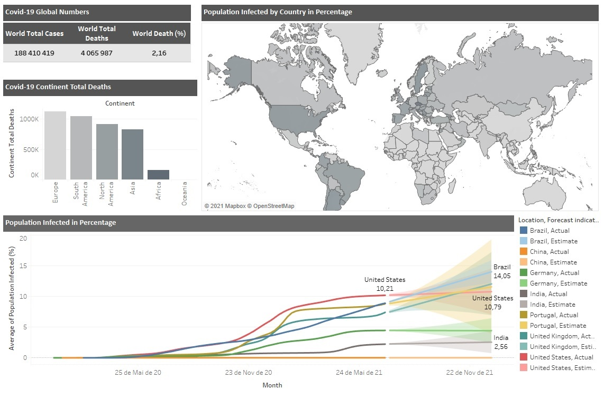
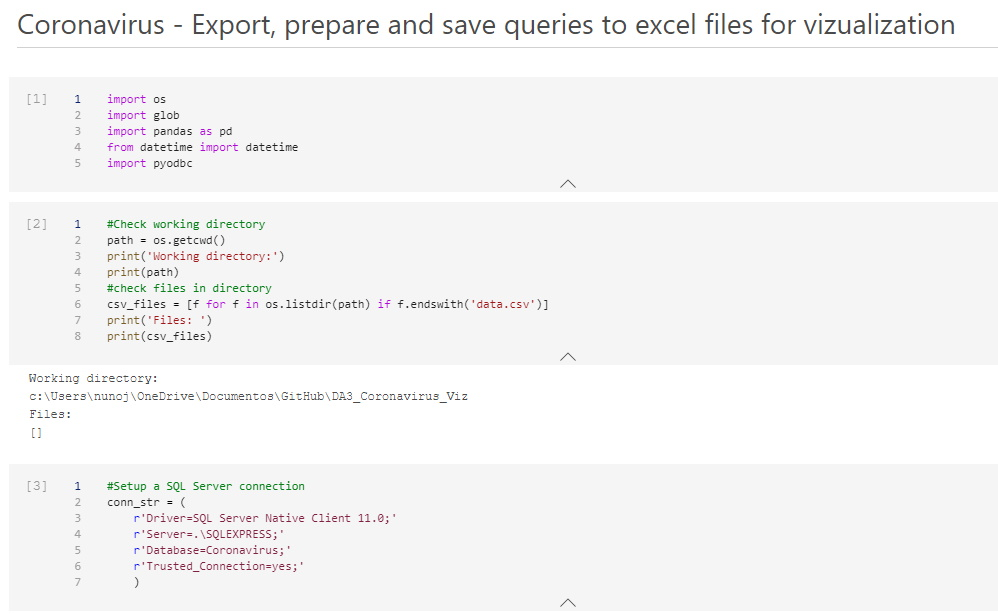
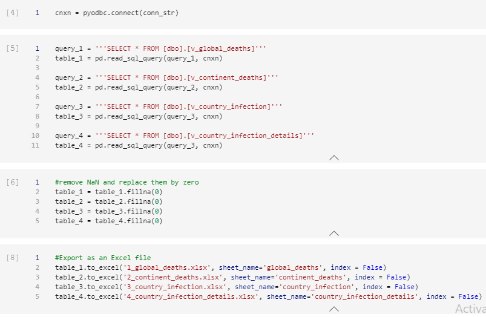

Nuno Lopes
Covid-19 tableau dashboard
Global numbers visualization dashboard in tableau.
covid-19 Tableau dashboard



Dataset
Coronavirus Pandemic (COVID-19)
Hannah Ritchie, Esteban Ortiz-Ospina, Diana Beltekian, Edouard Mathieu, Joe Hasell, Bobbie Macdonald, Charlie Giattino, Cameron Appel, Lucas Rodés-Guirao and Max Roser (2020) "Coronavirus Pandemic (COVID-19)". Published online at OurWorldInData.org. Retrieved from: 'https://ourworldindata.org/coronavirus' [Online Resource]
Data Preparation
Our database isn't directely linked with Tableau, so I have prepared the following code in Python that will pull the data for our vizualization from SQL Server so we can import it to Tableau.
Python code
#Import the necessary packages
import os
import glob
import pandas as pd
from datetime import datetime
import pyodbc#Setup a SQL Server connection
conn_str = (
r'Driver=SQL Server Native Client 11.0;'
r'Server=.\SQLEXPRESS;'
r'Database=Coronavirus;'
r'Trusted_Connection=yes;'
)Now we can just do a simple query to get the data from our previously created SQL Views.
query_1 = '''SELECT * FROM [dbo].[v_global_deaths]'''
table_1 = pd.read_sql_query(query_1, cnxn)
query_2 = '''SELECT * FROM [dbo].[v_continent_deaths]'''
table_2 = pd.read_sql_query(query_2, cnxn)
query_3 = '''SELECT * FROM [dbo].[v_country_infection]'''
table_3 = pd.read_sql_query(query_3, cnxn)
query_4 = '''SELECT * FROM [dbo].[v_country_infection_details]'''
table_4 = pd.read_sql_query(query_3, cnxn)Once the data is queried we just need to export it to csv files
#Export as an Excel file
table_1.to_excel('1_global_deaths.xlsx', sheet_name='global_deaths', index = False)
table_2.to_excel('2_continent_deaths.xlsx', sheet_name='continent_deaths', index = False)
table_3.to_excel('3_country_infection.xlsx', sheet_name='country_infection', index = False)
table_4.to_excel('4_country_infection_details.xlsx', sheet_name='country_infection_details', index = False)Data Vizualization
Our vizualization is based on the 4 queries made before and we have the following information displayed.
Vizualization created in Tableau
- Global World Covid-19 death toll - We have express the percentage of deaths for those who are infected.
- Covid-19 total death toll by continent, now viewed in a bar chart.
- Countries summary of highest number of infected cases compared to population, viewed in a map.
- Infection rate by country with a time line and a prediction made to where the covid-19 should evold at that point in time.
Tableau

Conclusion
This isn't an extensive analysis on the covid pandemic, but it allows us to take a quick gasp on the numbers involved in the pandemic. We can see clearly the mortality rate globaly and by continent. In a simple gance we can see the most affected countries in the map which is very intuitive. The last chart let us take a look at the progression of the desease and also gives us an idea on how it could progress.
An interesting analysis, since this is frozen in time (July 2021) is to compare the actual results with the prediction made on the last vizualization and see how the prediction fair with the actual results.